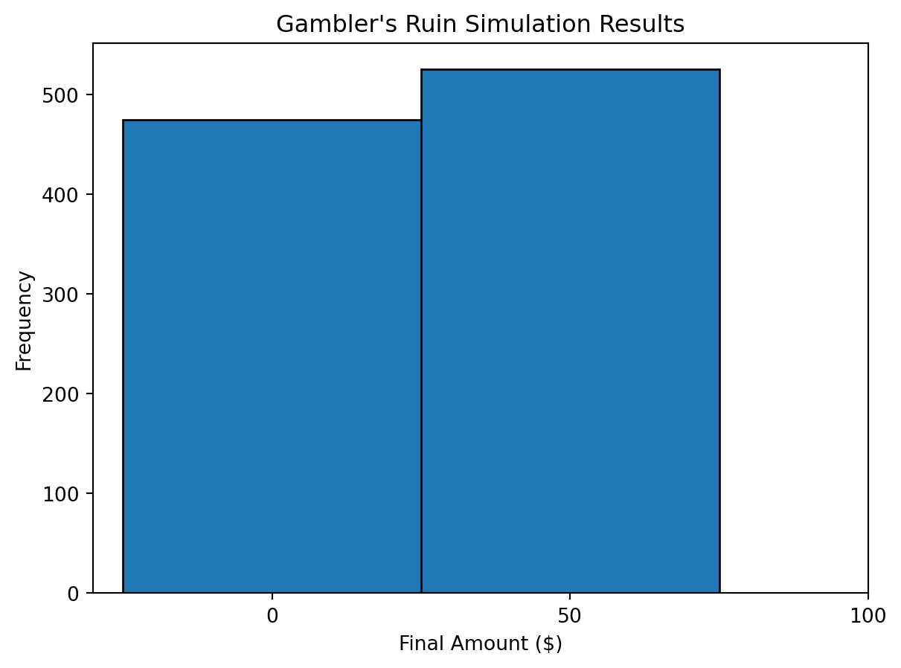
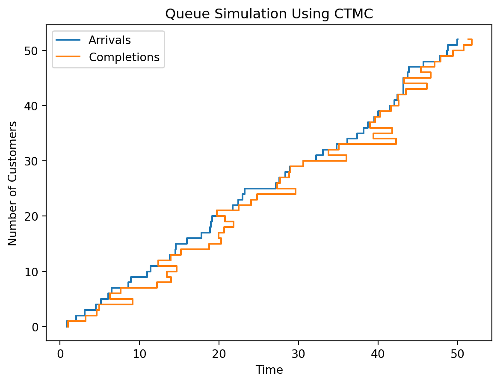

Phase-Type Distributions: A Comprehensive Tutorial
Introduction
Phase-type distributions are an important class of stochastic models derived from absorbing times in continuous-time Markov chains (CTMCs). These distributions are highly flexible, capable of approximating virtually any positive-valued distribution, and are particularly useful for modeling stochastic processes in various scientific and engineering fields.
Step 1: Understanding the Basics
Continuous-Time Markov Chains (CTMCs)
A Continuous-Time Markov Chain (CTMC) is characterized by a set of states and the rates at which transitions occur between these states. The time that the process spends in each state is exponentially distributed, where the rate parameter is determined by the negative of the diagonal entries of the transition rate matrix \(Q\).
Python Example: Plot a Simple CTMC
This example demonstrates how to visualize the transition rate matrix \(Q\) for a simple three-state CTMC:
import numpy as npimport matplotlib.pyplot as plt# Define the transition rate matrix for a 3-state CTMCQ = np.array([[-1, 0.7, 0.3], [0.4, -1.2, 0.8], [0.5, 0.5, -1]])fig, ax = plt.subplots()cax = ax.matshow(Q, cmap='viridis')fig.colorbar(cax)ax.set_title('CTMC Transition Rate Matrix Q')plt.show()

This matrix \(Q\) includes rates for transitions between all states. The off-diagonal elements indicate the rates of moving from one state to another, while the diagonal elements, being negative, signify the rates of leaving each state.
Step 2: Mathematical Foundations: Key Parameters and Their Interpretations
Subgenerator Matrix (S) The subgenerator matrix \(S\) of a phase-type distribution is a key component that describes the rates at which transitions occur between the transient states of a continuous-time Markov chain (CTMC). It’s important to note that:
Each off-diagonal element \(S_{ij}\) (where \(i \neq j\)) in the matrix represents the transition rate from state \(i\) to state \(j\). These values must be non-negative.
Each diagonal element \(S_{ii}\) is negative and its absolute value is the rate at which the process leaves state \(i\). Specifically, \(S_{ii}\) is the negative of the sum of all the off-diagonal elements in row \(i\), which ensures that the total rate out of each state is accounted for.
In phase-type distributions, the subgenerator matrix \(S\) is derived from the transition rate matrix \(Q\) of a CTMC by excluding any absorbing states. If \(Q\) represents a system where all states are transient (i.e., no absorbing states), then \(S\) is identical to \(Q\).
Initial Probability Vector (α) The initial probability vector \(\alpha\) specifies the probabilities of starting in each transient state at time \(t = 0\). The elements of \(\alpha\) should sum to 1, reflecting a complete probability distribution across the transient states.
Interpreting the Matrix of State Probabilities
When you calculate \(P(t) = e^{S \times t}\) using the matrix exponential, you obtain a matrix where each element \(P_{ij}(t)\) represents the probability of being in state \(j\) at time \(t\), given that the process started in state \(i\) at time \(0\). Here’s how to read and interpret this matrix:
Rows correspond to the initial states.
Columns correspond to the states at time \(t\).
Each entry \(P_{ij}(t)\) can be read as: “The probability that the system is in state \(j\) at time \(t\), starting from state \(i\) at time \(0\).”
Python Example: Calculate and Plot State Probabilities Over Time
Let’s enhance the previous Python example to make it clearer how these probabilities change over time and how to visualize and interpret the resulting matrix.
from scipy.linalg import expmimport matplotlib.pyplot as pltimport numpy as np# Define the subgenerator matrix for a CTMC with 3 transient statesS = Q# Time point for state probability calculationt =5# Compute the matrix exponential of S * t to get state probabilities at time tP_t = expm(S * t)# Create a heatmap to visualize the state probabilitiesfig, ax = plt.subplots()cax = ax.matshow(P_t, cmap='Reds')fig.colorbar(cax)# Set labels for readabilityax.set_xlabel('State at Time t')ax.set_ylabel('Initial State')ax.set_title(f'State Probabilities at Time t={t}')ax.set_xticks(range(len(P_t)))ax.set_yticks(range(len(P_t)))ax.set_xticklabels([f'State {i+1}'for i inrange(len(P_t))])ax.set_yticklabels([f'State {i+1}'for i inrange(len(P_t))])plt.show()

Explanation of the Output:
Each row in the heatmap represents a different starting state.
Each column represents a state at time \(t\).
The color intensity in each cell shows the probability of being in a state at time \(t\) from a specific starting state. Darker colors might indicate higher probabilities.
Understanding these transitions and how to visualize them helps in analyzing the behavior of Markovian models in real-world scenarios, such as predicting customer behavior in queues, modeling chemical processes, or even financial models predicting credit transitions.
Step 3: Types of Phase-Type Distributions
Special Cases and Their Uses
This step discusses several important special cases of phase-type distributions such as exponential, Erlang, hyperexponential, and Coxian distributions.
Python Example: Generate Data from an Erlang Distribution
Generate and visualize data from an Erlang distribution, which is a common model for aggregated exponential processes like service times in systems:
import numpy as npimport matplotlib.pyplot as plt# Generate data from an Erlang distribution with shape=3 and scale=1data = np.random.gamma(shape=3, scale=1, size=1000)plt.hist(data, bins=40, color='purple', alpha=0.7)plt.title('Histogram of Erlang Distributed Data')plt.show()
Step 4: Applying Phase-Type Distributions
Real-World Application: Scheduling Problem
Explore the application of phase-type distributions in scheduling based on the study by Kuiper et al. These distributions can model the time until the next event in a queue, which is crucial for optimizing scheduling systems.
Python Example: Simulate a Scheduling Scenario
Simulate interarrival times and service times in a simple scheduling model:
Fitting phase-type distributions to data involves finding the parameters of a model (like the transition matrix and the initial distribution vector) that best describe observed data. This can be particularly challenging due to the complexity of the calculations involved, but it’s a critical skill for applying these distributions in practice.
Theoretical Background
There are primarily two methods for fitting data to phase-type distributions:
Maximum Likelihood Estimation (MLE): This method estimates parameters that maximize the likelihood of the data given the model. MLE is powerful but computationally intensive, especially for large datasets or models with many parameters.
Method of Moments (MoM): This approach involves matching the theoretical moments of the distribution (like mean and variance) to the empirical moments of the data. It’s usually simpler and faster than MLE but might be less accurate.
Python Implementation
We’ll implement an example of fitting an Erlang distribution (a special case of phase-type distributions with identical phases) using both methods. The Erlang distribution is chosen for its relative simplicity while still capturing the essence of the process.
Generating Sample Data
First, we’ll generate some synthetic data that follows an Erlang distribution:
import numpy as npimport matplotlib.pyplot as pltfrom scipy.stats import erlang# Generate synthetic datashape =3# Number of phases in seriesscale =2# Rate parametersize =500# Number of data pointsdata = np.random.gamma(shape, scale, size)plt.hist(data, bins=30, color='blue', alpha=0.75)plt.title("Histogram of Generated Erlang Distribution Data")plt.show()
Method of Moments
We’ll calculate the empirical mean and variance and use these to estimate the parameters of the Erlang distribution:
empirical_mean = np.mean(data)empirical_var = np.var(data)# Erlang k (shape) estimated as (mean^2 / variance)estimated_k =round(empirical_mean**2/ empirical_var)estimated_lambda = estimated_k / empirical_meanprint(f"Estimated Shape (k): {estimated_k}")print(f"Estimated Rate (lambda): {estimated_lambda}")# Plot to comparex = np.linspace(0, max(data), 100)plt.hist(data, bins=30, density=True, alpha=0.5, color='blue', label='Data Histogram')plt.plot(x, erlang.pdf(x, a=estimated_k, scale=1/estimated_lambda), 'r-', label='Fitted Erlang PDF')plt.title("Erlang Fitting Using Method of Moments")plt.legend()plt.show()
For MLE, we can use optimization routines available in libraries such as SciPy to find the best-fit parameters:
from scipy.optimize import minimizefrom scipy.stats import gamma# Define the negative log-likelihood function for the Gamma distributiondef neg_log_likelihood(params, data): shape, scale = paramsreturn-np.sum(gamma.logpdf(data, a=shape, scale=scale))# Initial guesses for shape and scaleinitial_guess = [1, 1]# Minimize the negative log-likelihoodresult = minimize(neg_log_likelihood, initial_guess, args=(data,), bounds=((1, None), (0.1, None)))best_fit_shape, best_fit_scale = result.xprint(f"Best Fit Shape: {best_fit_shape}")print(f"Best Fit Scale: {best_fit_scale}")# Plotting the resultsplt.hist(data, bins=30, density=True, alpha=0.5, color='blue', label='Data Histogram')plt.plot(x, erlang.pdf(x, a=best_fit_shape, scale=1/best_fit_scale), 'g-', label='MLE Fitted Erlang PDF')plt.title("Erlang Fitting Using MLE")plt.legend()plt.show()
Best Fit Shape: 2.9105498625754405
Best Fit Scale: 2.028641499355219
/var/folders/3q/brsqfl1d30q9_6wmp4ny98jm0000gn/T/ipykernel_20512/2986217968.py:22: RuntimeWarning:
The shape parameter of the erlang distribution has been given a non-integer value array(2.91054986).
Conclusion
These examples demonstrate two primary methods for fitting phase-type distributions to empirical data. The choice of method depends on the specific requirements and constraints of the application, such as the need for accuracy versus computational efficiency.
This step effectively bridges theoretical knowledge and practical application, providing students with tools to apply phase-type distributions in real-world scenarios, enhancing both their understanding and skill set.